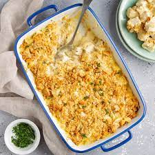

Chicken Casserole

Description
This is one savory dish that also comes from my mom. It involves chicken with cream of chicken soup as well as chicken broth placed over rice. It is packed full of nutrients and deliciousness.
This recipe was one of my favorites from my childhood and I'm excited to share it with you!
Ingredients
- 4/5 Chicken Breasts
- 1 Family Size Can or 2 Small Cans of Cream of Chicken Soup
- 1 Pack of Saltine Crackers
- 1-2 Cans of Chicken Broth
- 1 Stick of Butter
- Black Pepper
Steps
- Cook chicken until done and then cut into bite size pieces
- In a separate pot mix chicken broth, cream of chicken soup and butter until melted together
- In a mixing bowl crush cracker, add the cut up chicken and pour in the broth mixture
- Mix well and sprinkle pepper
- Don't add salt because the salt comes from the crackers.
- Bake in the oven at 350 degrees Fahrenheit for 25-30 minutes or until desired texture
- Enjoy over fresh cooked rice!
Return to Previous Page